somado 杣戸のアウトドア部
山と川を、 まるごと遊ぶ。
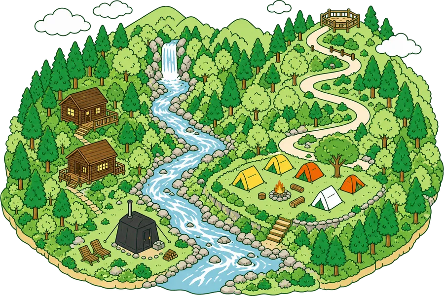
標高900メートル、鏡瀬川の源流に近い高台に、朝霧平キャンプ場はあります。杣戸のアウトドア部は、この一帯をまるごと遊び場にして、川に入る・森を走る・火を眺める、といった一日を組み立てているチームです。道具も送迎もこちらで用意するので、手ぶらで来て、そのまま川へ。はじめての人にはやさしく、通っている人には毎回ちがう一日を。遊び方の入口は、ここから選べます。
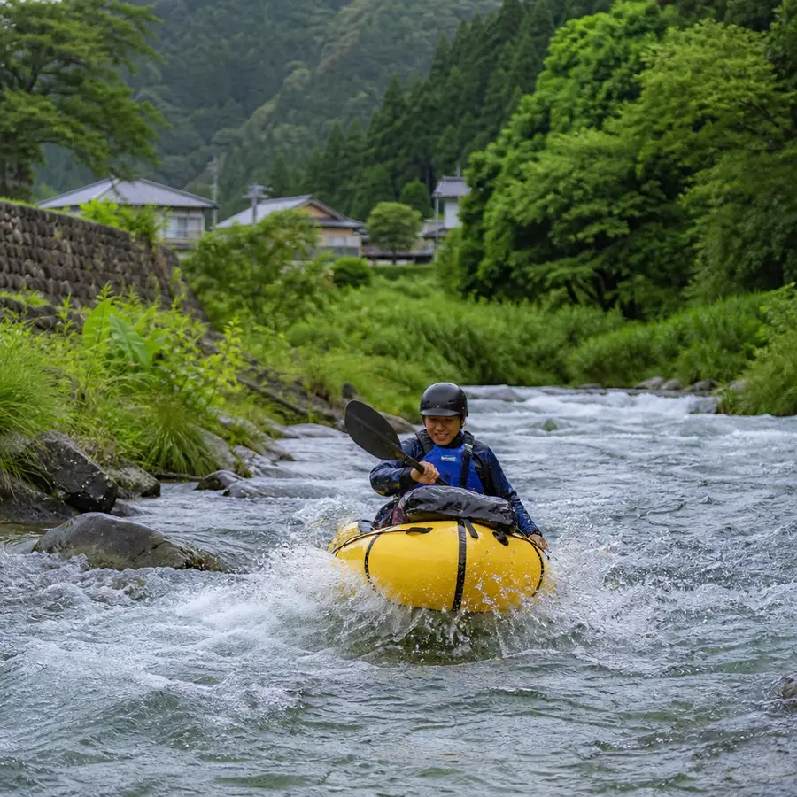
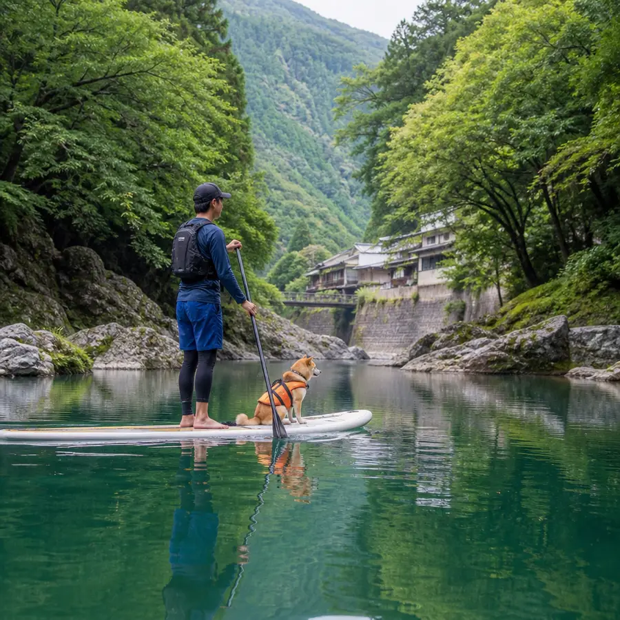
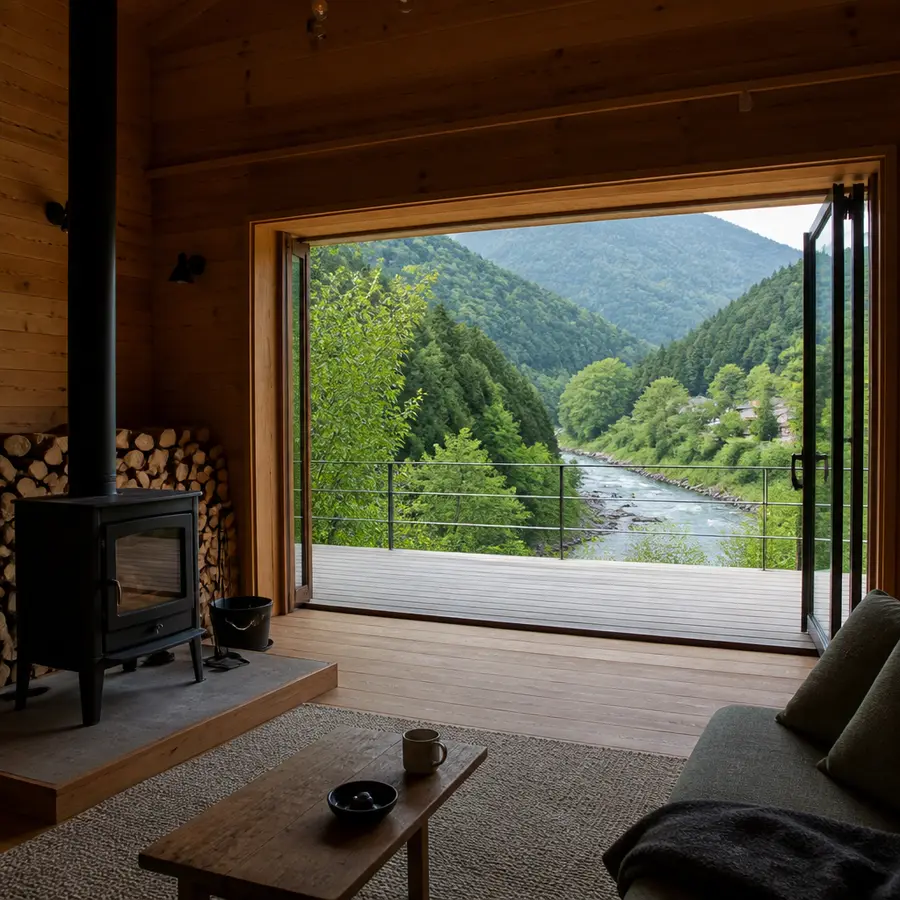
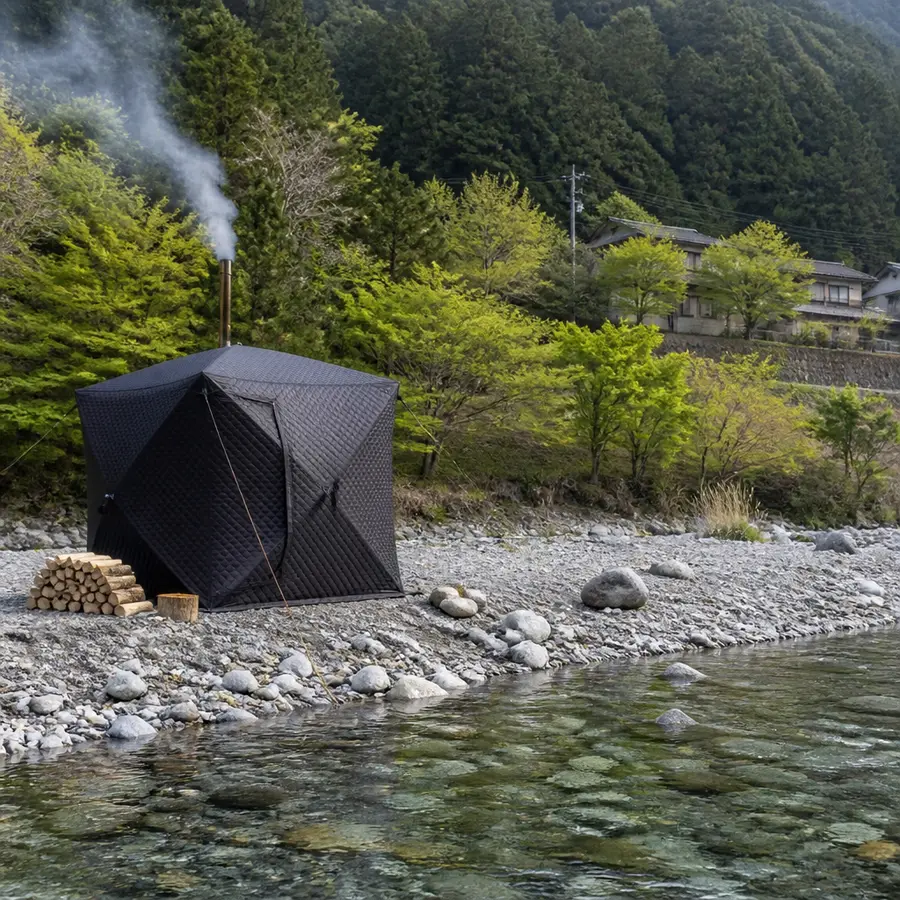
朝霧平キャンプ場
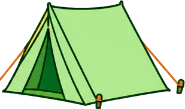
区画サイト、林間サイト、直火の使える焚き火サイトのほか、素泊まりのバンガローもあります。宿泊しない日帰りでも、渓流釣り堀・テントサウナ・ドッグランだけを使いに来られます。
沢のぼり
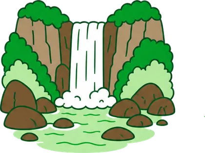
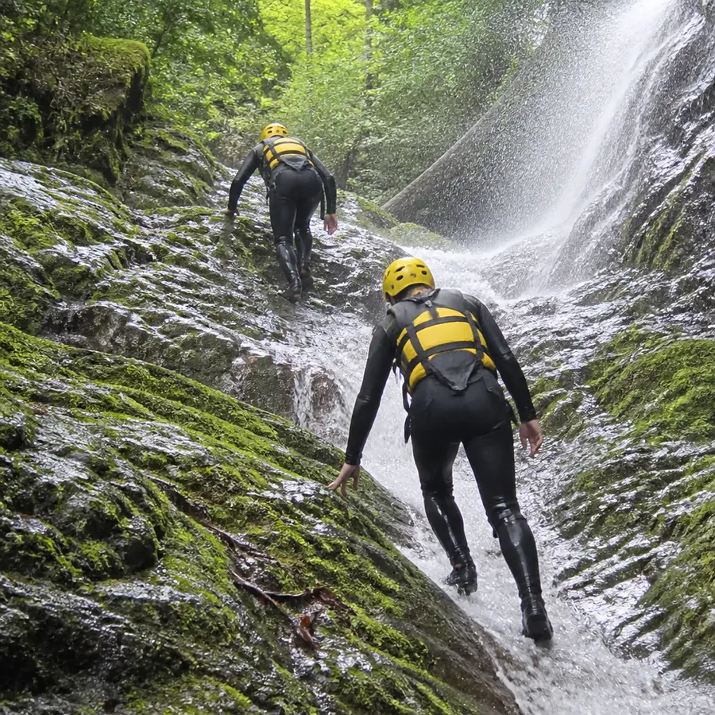
沢を、道だと思って登っていく半日。滝の裏をくぐり、淵は泳ぎ、最後は5メートルの岩から飛び込みます。全身ずぶ濡れになる前提の日です。
Eバイク林道ツアー
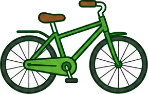
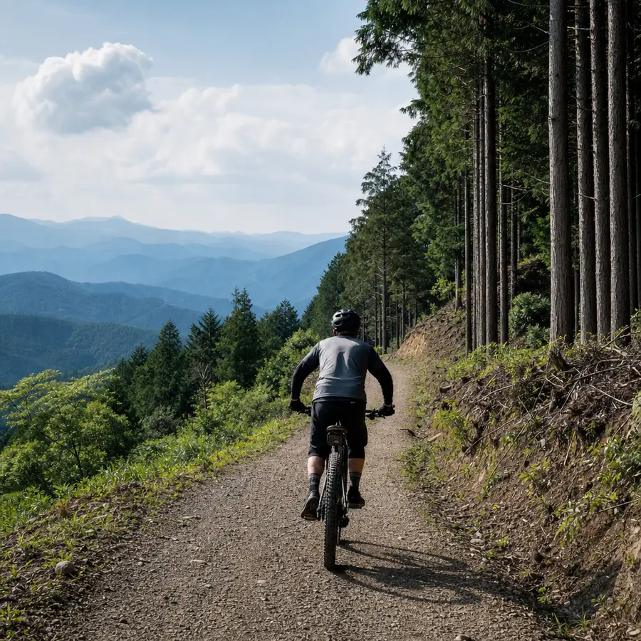
電動アシスト付きの自転車で、集落から尾根の展望地まで。登りはモーターにまかせて、下りだけを自分で楽しむ、ずるいけれど気持ちのいいツアーです。
川辺のテントサウナ
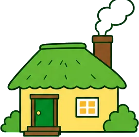
川原にテントを張って薪で熱を入れ、上がったらそのまま鏡瀬川へ。水温は真夏でも18度ほどしかありません。整うというより、頭が真っ白になります。
杣戸のアウトドア部総合受付
アクティビティのお申し込み、朝霧平キャンプ場のご予約、そのほかのお問い合わせはこちらから。
空きサイトの状況と、その日の川の様子は Instagram に流しています。
朝霧平キャンプ場 Instagram 杣戸のアウトドア部 Instagram